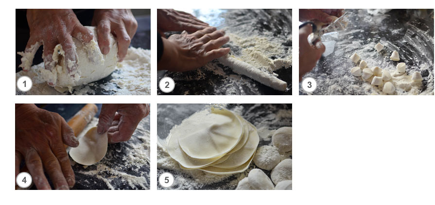
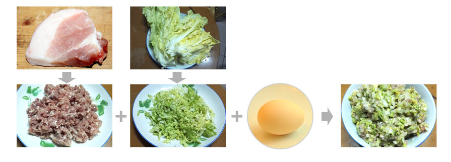
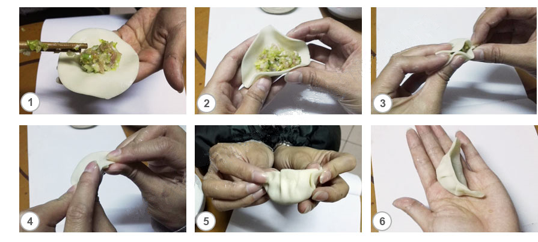
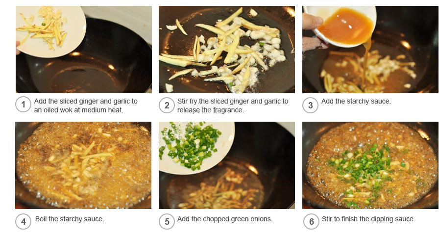
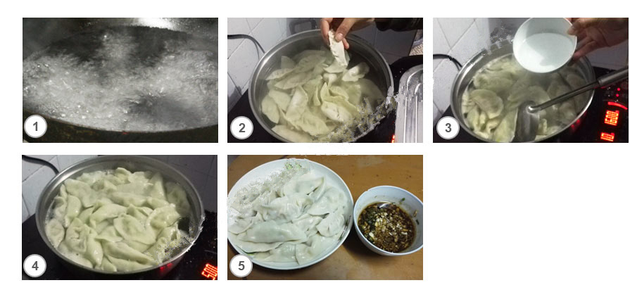

Dumplings are an important Chinese New Year food in northern China. On Chinese New Year's Eve, Northerners usually make and eat dumplings. There are many ways to cook dumplings, including boiling, steaming, and frying.
a) Put the wheat flour in a basin. Add some salt and mix evenly. Pour water in the center of the flour. Knead and stir the flour into dough. Cover the dough with a wet cloth for about half an hour.
b) Sprinkle some flour onto a board and place the dough on the board. Knead the dough into a long strip and cut it into dumpling-skin-size pieces.
c) Roll each small piece flat with a rolling pin to make the dumpling wrappers. Stack the wrappers aside, sprinkling some flour on each to prevent them from sticking together.
a) Clean and mince the pork.
b) Clean and mince the Chinese cabbage.
c) Mix the ground pork with the minced Chinese cabbage, salt, cooking wine, chicken powder, sugar, eggs, and some water, and stir them evenly.
a) Put a spoon of filling into the center of each wrapper.
b) Fold and pinch the wrapper edge together hard.
c) Make sure the wrapper edge is sealed.
a) Clean and chop some green onion, ginger, and garlic.
b) Make starchy sauce by mixing starch, boiled water, sugar, vinegar, soy sauce, and sesame oil.
c) Add the sliced ginger and garlic to an oiled wok, and stir-fry them until the fragrance is released.
d) Add the starchy sauce to the wok and bring to the boil.
e) Add the chopped green onions. Stir-fry quickly to finish the dipping sauce.
a) Boil some water, and add the dumplings one by one. While boiling the dumplings, stir them to prevent them from sticking together or to the pot.
b) When the water boils again, add a small cup of water. Cover and repeat twice more.
c) Drain the dumplings and serve them in a dish.
